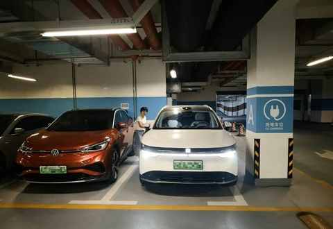
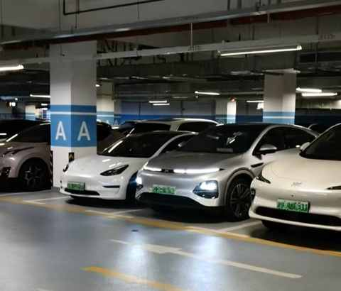
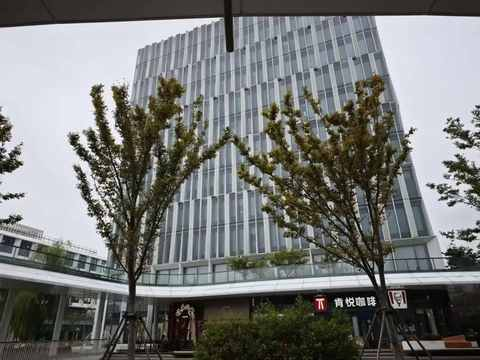
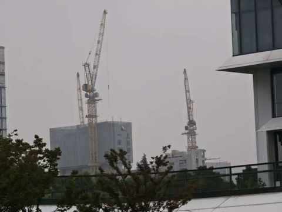
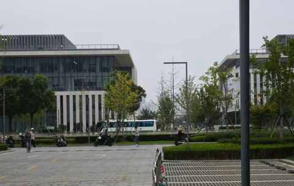
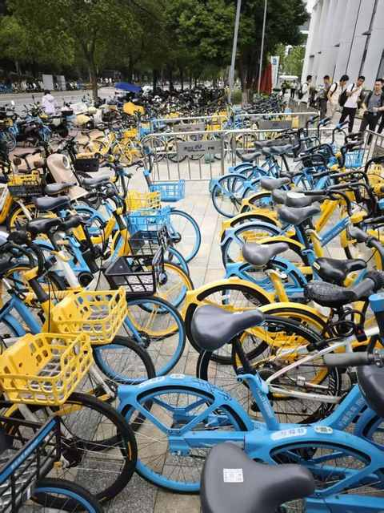
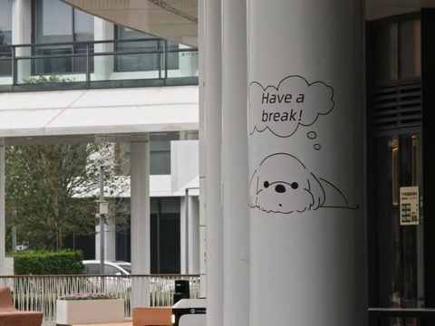

没想到送老婆去面试，居然是一次 “班味” 之旅
一、久违的面试
昨天老婆是 11 点面试，怕误了试驾 9 点半便从小区出发了。
毕竟我已经居家办公超过 10 年，现在是歇业中的个体户，而这次面试是老婆被裁员 4 个月以来的首次线下面试，之前几个月虽然有多次视频连线的面试，很遗憾的是都未走到线下面试的环节。
中年人被裁员和找工作的不易，我这个不工作的人都能感受到，更何况老婆作为一名游戏行业的视觉设计师，不管是线下还是线下面试之前都需要花一周左右的时间去做测试题，而且是无偿的。
掐指一算，距离我们两个人上次线下面试都超过 11 年了，时间如白驹过隙啊。
11 年后再次面试说不紧张是假的，老婆很紧张，我骗她说我不紧张，其实也有一点紧张，毕竟我今天的角色是司机。

设置好导航之后，一脚电门，50分钟不到便抵达地下车库。
一进车库，我就知道肯定来对了地方， 科技园区的地下车库绝对是这样的 ，有下面几个显著特征：
① 新能车是绝对主力，各个品牌的都有
② 车子停放的规范且整齐
③ 地面干净整洁，灯光亮度充足
找车位花了几分钟，老婆下车也心理建设了几分钟，找出口又花了几分钟

看到一个大厅很明亮，走进去发现需要刷卡，而且指示牌写了仅XX 员工使用。
最终，老婆问了一个在车库设备间的工作人员，他指引从楼梯上去，刚上到地面老婆就看到了停在路边的大巴车，也是她即将要面试的某游戏公司的班车。
还有一个小插曲，在车库的时候我看到附近有一辆小鹏 G6 的车灯是亮的，而且车里面没人，我特地拍了照片和视频，然后上去之后第一时间就找到保安说了具体情况，希望他能联系下车主，可能是没锁车。

等我和老婆回程的时候，再次路过这辆车，车灯还是亮的，不知道保安是否有联系到车主还是车主在忙没空处理，现在想来都不重要了，我做了我认为应该做的事情就行咯。
二、“班味”浓烈的中午
老婆在外面 KFC 待了一会儿来缓解紧张的情绪，随后觉得时间差不多了便去进到面试公司的大楼，我在对面 Tims 买了杯咖啡坐的店门口玩手机。
别点我喝的这个，口感一般，黑巧味和咖啡味都不够浓，在他们家还得是点深烘。
刚开始的半个小时都还好，秋风微凉，咖啡店门口不时有人走过。


正在手机上认真回复公账号留言的时候，猛然听到有人说出来几个关键词：破二、比赛、XX跑崩了，我立即把头抬起来，是三个身穿同款 T 恤的中年人，可能是某个跑团或者健身房的工作人员吧。
到了 11 点半，情况就不一样啦，浓烈的“班味”向我袭来：
① 外卖员多了起来，穿各家衣服的都有：红色的、蓝色的、黄色的、还有各种颜色混搭的……
② 工作不饱和的打工人已经优先出来觅食了，一小撮一小撮的，边走边侃侃而谈
③ 各种声音此起彼伏，有些能听清的：大多是外卖员打电话和取餐询问的声音，有些听不太清：大多人打工人的闲聊

由于常居郊区且很少去市区，也挺少去各种科技园区，没想到中午园区的 “班味” 如此浓烈。
观察到这个趋势，我就从座位上离开，在园区里面绕一绕最终找到一个相对人少的角落，依然时不时有背着双肩包在讨论各种工作的打工人路过。

当时的我可以说是：退无可退！
三、“班味” 是什么？
“ 班味 ”这个词不知道怎么就突然在网络上火了，昨天在园区待了才两个小区，对这两个字却有了深刻的理解。
“ 班味 ” 是一种在某个场域或时间无法摆脱的状态，是一个要随时待命的氛围……
打工人们辛苦啦，一定对自己好一点，多休息多锻炼身体。

祝所有打工人工作顺利，心想事成，也希望老婆早日回到打工人的行列！